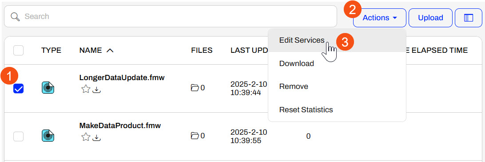
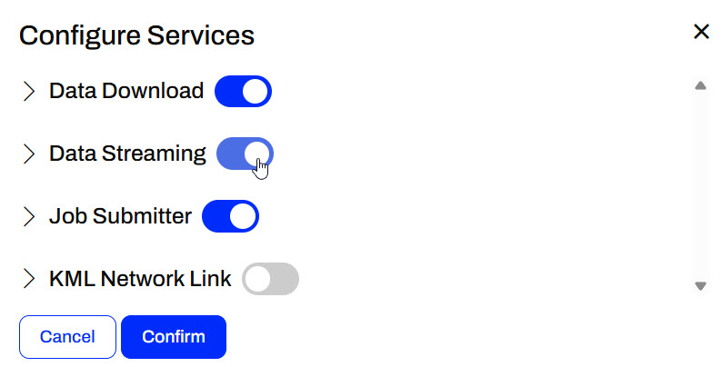
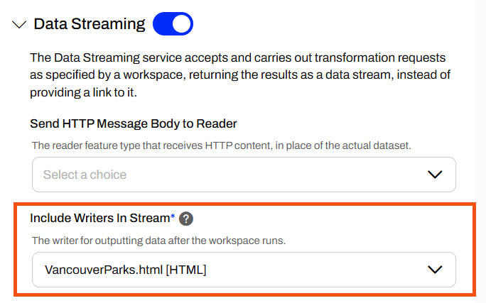
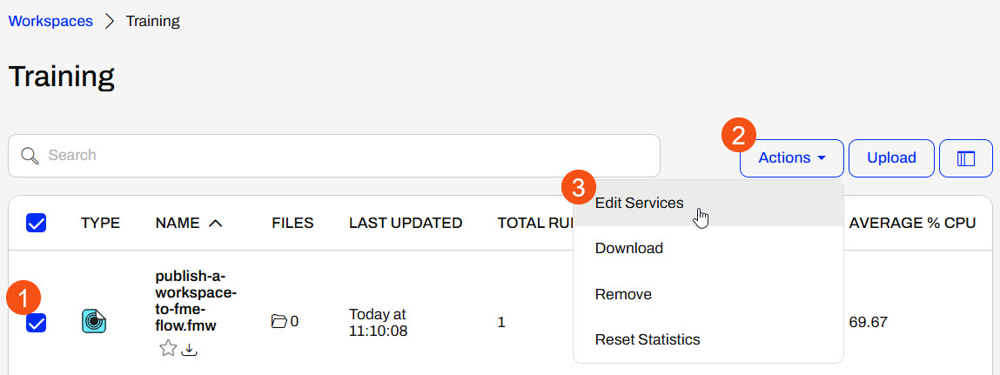
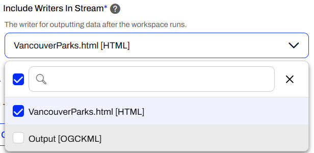
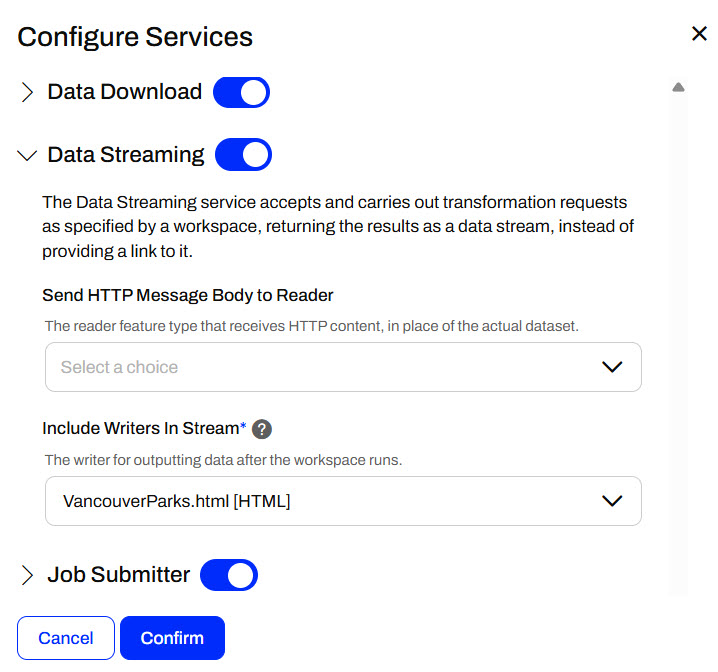
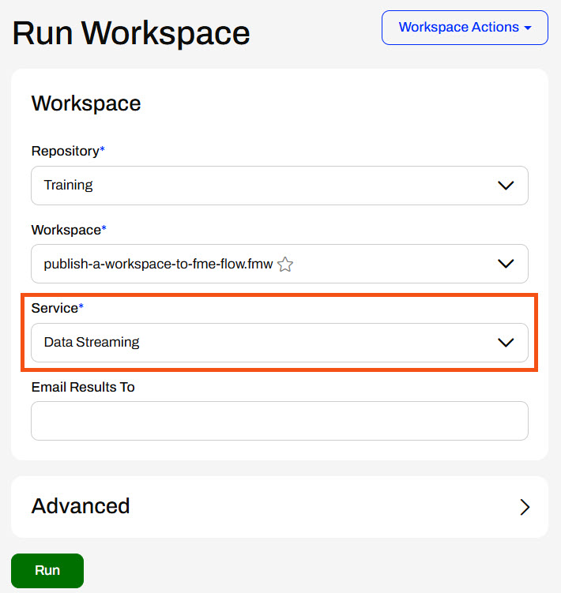
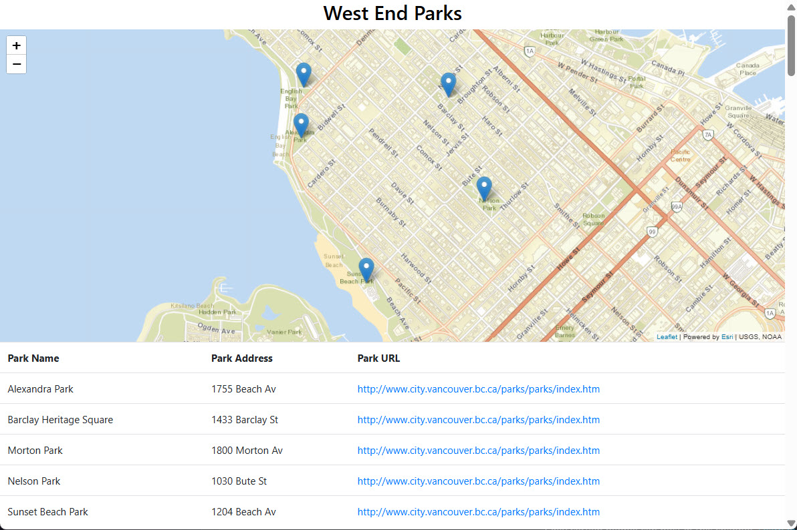

After completing this lesson, you’ll be able to:
The FME Flow Data Streaming transformation service functions similarly to the Data Download service. However, the Data Streaming service immediately streams a workspace's output data to the user in the browser instead of as a downloadable zip file. Again, the Writers selected for the Data Streaming service do not write the data in the file location you set in the Writer; instead, FME Flow presents the data to the user in the browser upon job completion.
Data Streaming output can include workspaces that write HTML, PNG, KML, GeoRSS, GeoJSON, PDF, and others. If the format is not compatible with streaming in the browser, the data will immediately download. The user does not have to click a download link like the Data Download service.
To change a workspace's services on FME Flow, navigate to Workspaces and open the repository housing the workspace. Select the workspace, expand the Actions button, and select Edit Services.

The Configure Services window opens, and you can toggle services on or off for the workspaces.

You should expand the service and ensure your writer(s) are included in the result. This applies to the Data Streaming and Data Download services. You may also optionally specify reader feature types to receive HTTP content instead of reading the dataset.

Sven continues working with his Vancouver Parks and Neighborhoods workspace, publish-a-workspace-to-fme-flow.fmw, which he previously published in FME Flow. He will edit the workspace services on FME Flow to include the Data Streaming service and have FME Flow stream the HTML report back to the user running the workspace.
Follow along with Sven's steps as he registers his workspace with the Data Streaming service and runs it on FME Flow.
On FME Flow, Sven opens the Workspaces page and selects the Training repository to open it. He checks the box to select his workspace, opens the Actions drop-down menu, and selects Edit Services.

Sven toggles on the Data Streaming service and expands its options. He notices that the KML and HTML writers are included in the stream. Since Sven only wants the HTML report to be streamed back to the user running the workspace, he deselects the KML writer from the list.

Once Sven's workspace services look like the following image, he clicks Confirm to close the Configure Services window.

On the Workspaces page, Sven clicks the workspace to open the Run Workspace page. He selects the Data Streaming service and clicks Run.

As Sven's workspace runs on FME Flow, FME Flow displays a dialog stating that the data streaming service is processing the workspace.
And once the translation is complete, FME Flow streams the HTML report back to Sven in the browser.

The HTML report separates Parks by neighborhood and displays a map and a table for each neighborhood. The maps are interactive, so Sven can click on parks and zoom in or out from their locations. Each park record in the table includes a link to the Park information on the City of Vancouver website. Sven knows this will be very useful for his colleagues to access summary information for the Parks quickly!
This HTML report is created using the HTML Report Generator. See How to Customize HTML Reports for a tutorial on creating and customizing HTML reports.